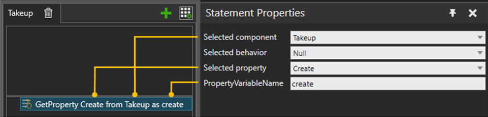

A GetProperty statement is used to access any static component’s property or its behavior property in a layout (including self/owner component).
Note: Only Int, Real, Vector, Matrix and String type properties are supported.

| Name | Description |
| SelectedComponent | Source Component from which the properties are read from. |
| SelectedBehavior | A list of behaviors in the Selected Component. Select the behavior to select its property, otherwise select Null. |
SelectedProperty |
If Selected behavior is Null, the list is showing component properties of Selected Component. Otherwise, listed properties belongs to Selected behavior. |
PropertyVariableName |
Name for the property variable that could be used in the other statements |